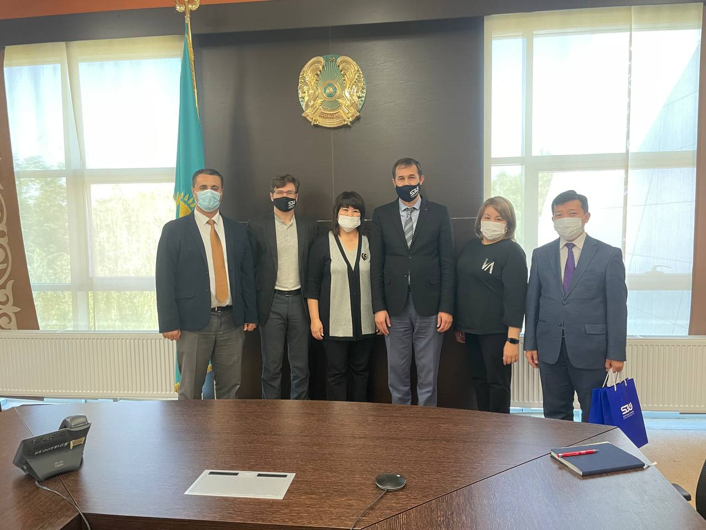

Писатель Анатолий Некрасов посетил СДУ
Университет имени Сулеймана Демиреля посетили известный исследователь, психолог, философ, член Союза писателей России, академик Европейской академии естественных наук, ведущий специалист в области семейных и межличностных отношений Анатолий Некрасов и психолог, семейный коуч-тренер Асхат Абжанов. Гостей приветствовали ректор СДУ Давронжон Гаипов и Проректор по социальным вопросам Малик Сатаев, которые рассказали о возможностях для обучающихся и ответили на интересующие вопросы. В свою очередь гости выразили свои пожелания и пообещали подарить книги библиотеке.
11.10.2021
Коллектив СДУ посетил Чарынский каньон
В преддверии Дня учителя коллектив Университета имени Сулеймана Демиреля посетил Чарынский Каньон.
Цель поездки – повышение сплоченности коллектива, командного духа, содействие развитию отношений между коллегами. В первом коллективном путешествии этого нового учебного года для участников были организованы различные игры, конкурс и групповые соревнования. Сотрудники СДУ не только посетили живописное глубокое ущелье в Казахстане, но и зарядились хорошим настроением.
11.10.2021
Подробная информация о педагогической переподготовке
Педагогическая переподготовка: Интервью с Арманом Аргынбаевым, координатор программы TEFL
Что такое педагогическая переподготовка и для кого разработана эта программа?Программа педагогической переподготовки предназначена для людей без педагогического образования, но желающих преподавать в школах. Мы знаем что все еще есть дефицит преподавателей в школах (это касается регионов, где ситуация с преподавателями сложная – информатику ведут айтишники, физику – инженера, и тд). Более того профессия педагога в последнее время подразумевает хорошие карьерные перспективы. Данная программа это интеллектуальный продукт который является казахстанским аналогом PGCE.
Кто может обучиться по этой программе? Есть ли какие-либо критерии отбора?HomePage
Where is Sdu?
University Video Review
About Author
What?
Suleyman Demirel
Where?
Город Каскелен Улица улица Абылай хана 1/1
You can reach Chania airport from all over Europe.
 В СДУ приехали гости из Управления образования Мангистауской области В университет приехали гости из Управления образования, Отдела образования по городу Актау и образовательных учреждений Мангистауской области. Гости Турлан Зейнет (Управление образования Мангистауской области, директор методического центра), Турганбаева Багдат (начальник Отдела образования по городу Актау), Алсеитов Нурболат (директор Образовательного центра «Достык-Актау»), Бултириков Дидар (директор центра «Тест-Актау»)) обсудили возможности повышения квалификации преподавателей и встретились с ректором Д. Гаиповым в стенах СДУ. Также поднимались вопросы о проектах, связанных с повышением качества среднего образования.